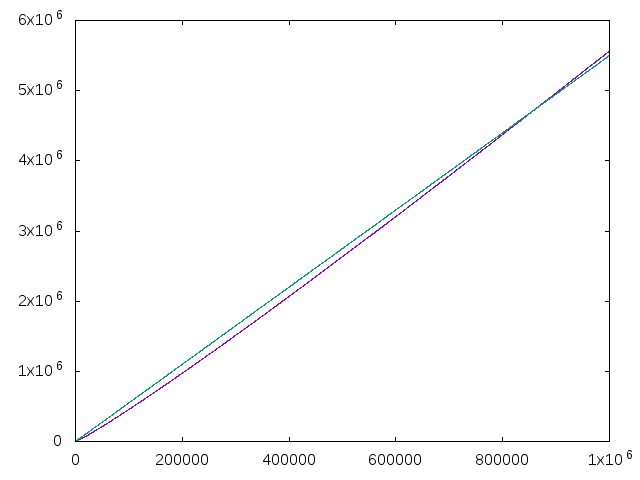

Número de dígitos del factorial
Definir las funciones
nDigitosFact :: Integer -> Integer graficas :: [Integer] -> IO ()
tales que
- (nDigitosFact n) es el número de dígitos de n!. Por ejemplo,
nDigitosFact 0 == 1 nDigitosFact 4 == 2 nDigitosFact 5 == 3 nDigitosFact 10 == 7 nDigitosFact 100 == 158 nDigitosFact 1000 == 2568 nDigitosFact 10000 == 35660 nDigitosFact 100000 == 456574 nDigitosFact 1000000 == 5565709
- (graficas xs) dibuja las gráficas de los números de dígitos del factorial de k (para k en xs) y de la recta y = 5.5 x. Por ejemplo, (graficas [0,500..10^6]) dibuja

Nota: Este ejercicio está basado en el problema How many digits? de Kattis en donde se impone la restricción de calcular, en menos de 1 segundo, el número de dígitos de los factoriales de 10.000 números del rango [0,1.000.000].
Se puede simular como sigue
λ> import System.Random λ> xs <- sequence [randomRIO (0,10^6) | _ <- [1..10^3]] λ> maximum (map nDigitosFact4 xs) 5561492 λ> xs <- sequence [randomRIO (0,10^6) | _ <- [1..10^3]] λ> maximum (map nDigitosFact4 xs) 5563303
Soluciones
import Data.List (genericLength, genericIndex) import Graphics.Gnuplot.Simple -- 1ª definición nDigitosFact1 :: Integer -> Integer nDigitosFact1 n = genericLength (show (product [1..n])) -- 2ª definición (usando logaritmos) -- ================================= -- Basado en -- nDigitos (n!) = 1 + floor (log (n!)) -- = 1 + floor (log (1*2*3*...*n)) -- = 1 + floor (log(1) + log(2) + log(3) +...+ log(n)) nDigitosFact2 :: Integer -> Integer nDigitosFact2 n = 1 + floor (sum [logBase 10 (fromIntegral k) | k <- [1..n]]) -- 3ª definición (usando logaritmos y programación dinámica) -- ========================================================= nDigitosFact3 :: Integer -> Integer nDigitosFact3 0 = 1 nDigitosFact3 n = 1 + floor ((sumLogs `genericIndex` (n-1)) / log 10) logs :: [Double] logs = map log [1..] sumLogs :: [Double] sumLogs = scanl1 (+) logs -- 4ª definición (Usando la fórmula de Kamenetsky) -- =============================================== -- La fórmula se encuentra en https://oeis.org/A034886 nDigitosFact4 :: Integer -> Integer nDigitosFact4 0 = 1 nDigitosFact4 1 = 1 nDigitosFact4 n = 1 + floor (m * logBase 10 (m/e) + logBase 10 (2*pi*m)/2) where m = fromIntegral n e = exp 1 -- λ> nDigitosFact1 (4*10^4) -- 166714 -- (5.61 secs, 1,649,912,864 bytes) -- λ> nDigitosFact2 (4*10^4) -- 166714 -- (0.10 secs, 13,741,360 bytes) -- -- λ> nDigitosFact2 (7*10^5) -- 3787566 -- (1.86 secs, 187,666,328 bytes) -- λ> nDigitosFact3 (7*10^5) -- 3787566 -- (0.02 secs, 0 bytes) -- λ> nDigitosFact3 (7*10^5) -- 3787566 -- (1.01 secs, 238,682,064 bytes) -- λ> nDigitosFact4 (7*10^5) -- 3787566 -- (0.01 secs, 0 bytes) -- -- λ> import System.Random -- λ> xs <- sequence [randomRIO (0,10^6) | _ <- [1..10^2]] -- λ> maximum (map nDigitosFact3 xs) -- 5565097 -- (11.19 secs, 7,336,595,440 bytes) -- λ> maximum (map nDigitosFact4 xs) -- 5565097 -- (0.01 secs, 0 bytes) graficas :: [Integer] -> IO () graficas xs = plotLists [Key Nothing] [p1, p2] where p1, p2 :: [(Float, Float)] p1 = [(fi k, fi (nDigitosFact4 k)) | k <- xs] p2 = [(k',5.5*k') | k <- xs, let k' = fi k] fi = fromIntegral